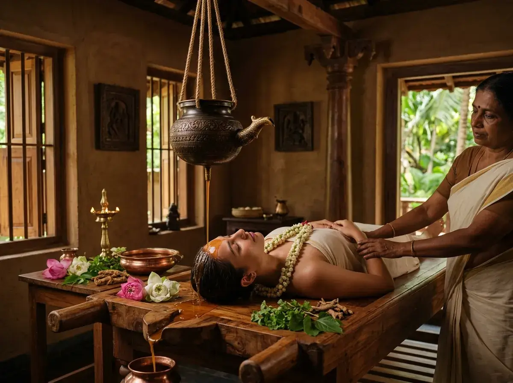

Experience Authentic Ayurvedic Healing
Consult with our qualified Ayurvedic doctors and senior Kerala therapists at Ayuryoga International.
Book via WhatsApp (Moka: 58074009)Timeless healing insights, doctor-guided lifestyle practices, botanical skincare secrets, and traditional Kerala wellness advice tailored for living well in Mauritius.

Feeling exhausted from everyday stress? Discover the top 7 Kerala Ayurvedic massages in Mauritius including Abhyangam, Shirodhara, Kizhi, and signature packages across Moka, Grand Baie, and Curepipe.

Are you looking for an authentic Kerala Ayurvedic experience in Mauritius? Discover the healing wisdom of Abhyangam, Shirodhara, Ksheeradhara, and herbal therapies across Moka, Grand Baie, and Curepipe.

Looking for the best Ayurveda in Mauritius? Discover authentic traditional Kerala healing, Shirodhara, Abhyangam, herbal therapies, and holistic wellness at Ayuryoga International across Moka, Grand Baie, and Curepipe.
Consult with our qualified Ayurvedic doctors and senior Kerala therapists at Ayuryoga International.
Book via WhatsApp (Moka: 58074009)